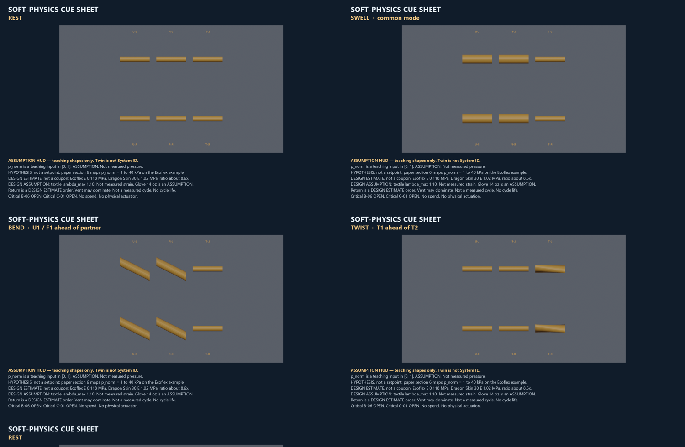

n3 viz pack — soft physics, B-06, C-01, SAF-02
Track A only. 21 Sep 2026. Status: READY_FOR_OLA .
ASSUMPTION / DESIGN ESTIMATE / HYPOTHESIS. Not measured pressure, strain, force, FPS, or cycle life. Twin is not System ID. B-06, C-01, and SAF-02 stay OPEN. No spend.
READY_FOR_OLA · INDEX.md · NOTE · START_HERE
Soft-physics cues
Rest, swell, bend, twist, return. Teaching shapes. Not System ID.

Yaw, slim left root
I1_bag_black collars. Cyan pads retired. Bright-cyan pixels on frames 30 and 68: 0. Visual slim, not a measured section.
B-06 keep-out — Critical OPEN
ASSUMPTION illustration. Not measured clearance. No invented millimeters.
C-01 coupon board — Critical OPEN
Paper geometry only. No cast. Not System ID.
SAF-02 digital HIL — OPEN
Schematic only. SIMULATED_BOOL_NOT_HARDWARE. No physical actuation.